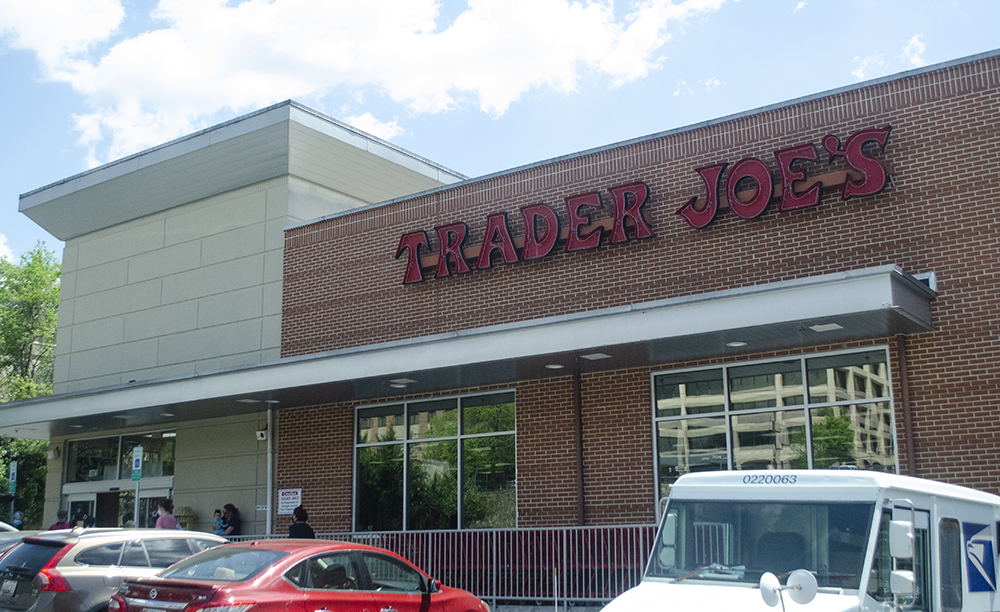

Prince George’s County, one of the most affluent predominantly Black jurisdictions in the country, remains an example of nationwide trends of disparities in food accessibility with 15 percent of the region being considered a food desert.
Overall, 14 percent of the county’s population is food insecure, meaning that individuals have less access to healthy food due to low income or other financial constraints. Areas of the county have been identified as both food deserts and food swamps in recent years — an issue the county has been trying to resolve since 2013 with the creation of the Food Equity Council.
A food desert is a region where residents have less access to affordable groceries and healthy food, affected by factors such as poverty, the absence of grocery stores within traveling distance and the lack of access to vehicles. Those within the Food Equity Council have given more urban areas of the county the nomenclature of “food swamp,” meaning a region where there are more unhealthy foods to be easily accessed by residents, as compared to healthy foods.
Population: 909,327
Race/Ethnicity:
Median household income: $84,920
Poverty rate: 8.7%
Persons per household: 2.86
Persons without a vehicle: 9%
Data from the U.S. Census and Maryland Food System Map Project
The Giant grocery store in Silver Spring, Md., on April 30.
The Trader Joe's grocery store in Silver Spring, Md., on April 30.
No matter the term used, the consensus from county officials is that there is an issue at hand for residents in accessing and affording healthy food, particularly in more urban areas of the county.
The U.S. Department of Agriculture created an atlas to visualize food deserts throughout the country, measuring regions by low income and low access layers. For Prince George’s County, there is low income and low access to grocery stores mainly at 0.5 and 10 miles. This means that at least 500 people or at least 33 percent of the population is more than 0.5 miles from the nearest supermarket, supercenter or grocery store in an urban area, or more than 10 miles if in a rural area, as explained by Alana Rhone, an agricultural economist at the USDA.
A map of Prince George's County that depicts low access and low income at the 1 and 10 mile mark (green), as well as low vehicle access (purple). Map from the USDA.
Rhone added that in her research, she typically looks at the low income and low access layer at 1 and 10 miles, with the low vehicle access layer. Some areas of the county are afflicted by both layers.
“These tracts could possibly be the worst off because they have a significant number of people that live far from a grocery store and don’t have access to a vehicle,” Rhone said.
About 9 percent of the households in the county are without a vehicle, according to a food systems profile by the Maryland Food System Map Project and Johns Hopkins. Additionally, the problem exists in the ratio of unhealthy food outlets to healthier alternatives – citing the fact that unhealthy food venues account for approximately 55 percent of all the food retail outlets in the targeted communities.
Prince George’s County ranks the highest in the state for the amount of fast food chains, which is about 286, according to food systems profile. Moreover, placement of these unhealthier alternatives makes them more accessible than other options such as supermarkets.
While low vehicle access is a problem and there is a greater distance from supermarkets in general, the county has been concerned with the problem of people having access to healthy food specifically – rather than just placing more supermarkets in these communities, the issue starts at the spatial distribution of them, as well as pricing and quality of food products sold, a food system study revealed.
The Maryland-National Capital Park & Planning Commission launched a survey to 600 residents in the county in 2015. The results found that Prince Georgians said that they have difficulty accessing nutritious and affordable food within a reasonable distance of their home.
A result of these food insecurities lies in health disparities in Prince George’s County as compared to the rest of the state. There are higher rates of weight-related chronic diseases and the Healthy Food Report found that residents who lived within the Capital Beltway and urban parts of the county, had higher rates of diet-related illnesses than those who reside in other areas of the county.
The Healthy Food Report also listed policy recommendations to solve the issue. Among the 18, launching a healthy eating awareness program, encouraging local food production, encouraging grocery stores to sell discounted, imperfect produce, increase sustainable food production, improving transportation, rethinking zoning and increasing participation in federal nutrition assistance programs were suggested.
“As the COVID-19 crisis continues and unemployment rises, no one should have to worry about their food supply or where their next meal will come from,” said County Executive Angela Alsobrooks, during a press conference last April.